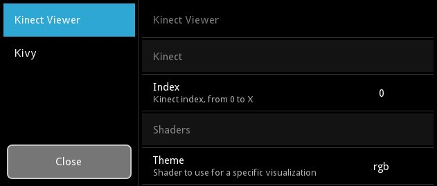

{kind=link}
Table Of Contents
Application¶
The App class is the base for creating Kivy applications. Think of it as your main entry point into the Kivy run loop. In most cases, you subclass this class and make your own app. You create an instance of your specific app class and then, when you are ready to start the application’s life cycle, you call your instance’s App.run() method.
Creating an Application¶
Method using build() override¶
To initialize your app with a widget tree, override the build() method in your app class and return the widget tree you constructed.
Here’s an example of a very simple application that just shows a button:
'''
Application example using build() + return
==========================================
An application can be built if you return a widget on build(), or if you set
self.root.
'''
import kivy
kivy.require('1.0.7')
from kivy.app import App
from kivy.uix.button import Button
class TestApp(App):
def build(self):
# return a Button() as a root widget
return Button(text='hello world')
if __name__ == '__main__':
TestApp().run()
The file is also available in the examples folder at kivy/examples/application/app_with_build.py.
Here, no widget tree was constructed (or if you will, a tree with only the root node).
Method using kv file¶
You can also use the Kivy Language for creating applications. The .kv can contain rules and root widget definitions at the same time. Here is the same example as the Button one in a kv file.
Contents of ‘test.kv’:
#:kivy 1.0
Button:
text: 'Hello world'
Contents of ‘main.py’:
'''
Application from a .kv
======================
The root application is created from the corresponding .kv. Check the test.kv
file to see what will be the root widget.
'''
import kivy
kivy.require('1.0.7')
from kivy.app import App
class TestApp(App):
pass
if __name__ == '__main__':
TestApp().run()
See kivy/examples/application/app_with_kv.py.
The relation between main.py and test.kv is explained in App.load_kv().
Application configuration¶
New in version 1.0.7.
Use the configuration file¶
Your application might want to have its own configuration file. The App is able to handle an INI file automatically. You add your section/key/value in the App.build_config() method by using the config parameter (which is an instance of ConfigParser):
class TestApp(App):
def build_config(self, config):
config.setdefaults('section1', {
'key1': 'value1',
'key2': '42'
})
As soon as you add one section in the config, a file is created on the disk and named from the mangled name of your class. “TestApp” will give a config file-name “test.ini” with the content:
[section1]
key1 = value1
key2 = 42
The “test.ini” will be automatically loaded at runtime and you can access the configuration in your App.build() method:
class TestApp(App):
def build_config(self, config):
config.setdefaults('section1', {
'key1': 'value1',
'key2': '42'
})
def build(self):
config = self.config
return Label(text='key1 is %s and key2 is %d' % (
config.get('section1', 'key1'),
config.getint('section1', 'key2')))
Create a settings panel¶
Your application can have a settings panel to let your user configure some of your config tokens. Here is an example done in the KinectViewer example (available in the examples directory):

You can add your own panels of settings by extending the App.build_settings() method. Check the Settings about how to create a panel, because you need a JSON file / data first.
Let’s take as an example the previous snippet of TestApp with custom config. We could create a JSON like this:
[
{ "type": "title",
"title": "Test application" },
{ "type": "options",
"title": "My first key",
"desc": "Description of my first key",
"section": "section1",
"key": "key1",
"options": ["value1", "value2", "another value"] },
{ "type": "numeric",
"title": "My second key",
"desc": "Description of my second key",
"section": "section1",
"key": "key2" }
]
Then, we can create a panel using this JSON to automatically create all the options and link them to our App.config ConfigParser instance:
class TestApp(App):
# ...
def build_settings(self, settings):
jsondata = """... put the json data here ..."""
settings.add_json_panel('Test application',
self.config, data=jsondata)
That’s all! Now you can press F1 (default keystroke) to toggle the settings panel or press the “settings” key on your android device. You can manually call App.open_settings() and App.close_settings() if you want to handle this manually. Every change in the panel is automatically saved in the config file.
You can also use App.build_settings() to modify properties of the settings panel. For instance, the default panel has a sidebar for switching between json panels whose width defaults to 200dp. If you’d prefer this to be narrower, you could add:
settings.interface.menu.width = dp(100)
to your build_settings() method.
You might want to know when a config value has been changed by the user in order to adapt or reload your UI. You can then overload the on_config_change() method:
class TestApp(App):
# ...
def on_config_change(self, config, section, key, value):
if config is self.config:
token = (section, key)
if token == ('section1', 'key1'):
print('Our key1 have been changed to', value)
elif token == ('section1', 'key2'):
print('Our key2 have been changed to', value)
The Kivy configuration panel is added by default to the settings instance. If you don’t want this panel, you can declare your Application as follows:
class TestApp(App):
use_kivy_settings = False
# ...
This only removes the Kivy panel but does not stop the settings instance from appearing. If you want to prevent the settings instance from appearing altogether, you can do this:
class TestApp(App):
def open_settings(self, *largs):
pass
Profiling with on_start and on_stop¶
It is often useful to profile python code in order to discover locations to optimise. The standard library profilers (http://docs.python.org/2/library/profile.html) provides multiple options for profiling code. For profiling the entire program, the natural approaches of using profile as a module or profile’s run method does not work with Kivy. It is however, possible to use App.on_start() and App.on_stop() methods:
import cProfile
class MyApp(App):
def on_start(self):
self.profile = cProfile.Profile()
self.profile.enable()
def on_stop(self):
self.profile.disable()
self.profile.dump_stats('myapp.profile')
This will create a file called myapp.profile when you exit your app.
Customising layout¶
You can choose different settings widget layouts by setting App.settings_cls. By default, this is a Settings class which provides the pictured sidebar layout, but you could set it to any of the other layouts provided in kivy.uix.settings or create your own. See the module documentation for kivy.uix.settings for more information.
You can customise how the settings panel is displayed by overriding App.display_settings() which is called before displaying the settings panel on the screen. By default, it simply draws the panel on top of the window, but you could modify it to (for instance) show the settings in a Popup or add it to your app’s ScreenManager if you are using one. If you do so, you should also modify App.close_settings() to exit the panel appropriately. For instance, to have the settings panel appear in a popup you can do:
def display_settings(self, settings):
try:
p = self.settings_popup
except AttributeError:
self.settings_popup = Popup(content=settings,
title='Settings',
size_hint=(0.8, 0.8))
p = self.settings_popup
if p.content is not settings:
p.content = settings
p.open()
def close_settings(self, *args):
try:
p = self.settings_popup
p.dismiss()
except AttributeError:
pass # Settings popup doesn't exist
Finally, if you want to replace the current settings panel widget, you can remove the internal references to it using App.destroy_settings(). If you have modified App.display_settings(), you should be careful to detect if the settings panel has been replaced.
Pause mode¶
New in version 1.1.0.
Warning
This mode is experimental, and designed for phones/tablets. There are some cases where your application could crash on resume.
On tablets and phones, the user can switch at any moment to another application. By default, your application will close and the App.on_stop() event will be fired.
If you support Pause mode, when switching to another application, your application will wait indefinitely until the user switches back to your application. There is an issue with OpenGL on Android devices: it is not guaranteed that the OpenGL ES Context will be restored when your app resumes. The mechanism for restoring all the OpenGL data is not yet implemented in Kivy.
The currently implemented Pause mechanism is:
- Kivy checks every frame if Pause mode is activated by the Operating System due to the user switching to another application, a phone shutdown or any other reason.
- App.on_pause() is called:
- If False is returned (default case), then App.on_stop() is called.
- Otherwise the application will sleep until the OS resumes our App
- When the app is resumed, App.on_resume() is called.
- If our app memory has been reclaimed by the OS, then nothing will be called.
Here is a simple example of how on_pause() should be used:
class TestApp(App):
def on_pause(self):
# Here you can save data if needed
return True
def on_resume(self):
# Here you can check if any data needs replacing (usually nothing)
pass
Warning
Both on_pause and on_stop must save important data because after on_pause is called, on_resume may not be called at all.
- class kivy.app.App(**kwargs)[source]¶
Bases: kivy.event.EventDispatcher
Application class, see module documentation for more information.
Events : - on_start:
Fired when the application is being started (before the runTouchApp() call.
- on_stop:
Fired when the application stops.
- on_pause:
Fired when the application is paused by the OS.
- on_resume:
Fired when the application is resumed from pause by the OS. Beware: you have no guarantee that this event will be fired after the on_pause event has been called.
Changed in version 1.7.0: Parameter kv_file added.
Changed in version 1.8.0: Parameters kv_file and kv_directory are now properties of App.
- build()[source]¶
Initializes the application; it will be called only once. If this method returns a widget (tree), it will be used as the root widget and added to the window.
Returns: None or a root Widget instance if no self.root exists.
- build_config(config)[source]¶
New in version 1.0.7.
This method is called before the application is initialized to construct your ConfigParser object. This is where you can put any default section / key / value for your config. If anything is set, the configuration will be automatically saved in the file returned by get_application_config().
Parameters : - config: ConfigParser
Use this to add default section / key / value items
- build_settings(settings)[source]¶
New in version 1.0.7.
This method is called when the user (or you) want to show the application settings. It is called once when the settings panel is first opened, after which the panel is cached. It may be called again if the cached settings panel is removed by destroy_settings().
You can use this method to add settings panels and to customise the settings widget e.g. by changing the sidebar width. See the module documentation for full details.
Parameters : - settings: Settings
Settings instance for adding panels
- close_settings(*largs)[source]¶
Close the previously opened settings panel.
Returns: True if the settings has been closed.
- config = None¶
Returns an instance of the ConfigParser for the application configuration. You can use this to query some config tokens in the build() method.
- create_settings()[source]¶
Create the settings panel. This method will normally be called only one time per application life-time and the result is cached internally, but it may be called again if the cached panel is removed by destroy_settings().
By default, it will build a settings panel according to settings_cls, call build_settings(), add a Kivy panel if use_kivy_settings is True, and bind to on_close/on_config_change.
If you want to plug your own way of doing settings, without the Kivy panel or close/config change events, this is the method you want to overload.
New in version 1.8.0.
- destroy_settings()[source]¶
New in version 1.8.0.
Dereferences the current settings panel if one exists. This means that when App.open_settings() is next run, a new panel will be created and displayed. It doesn’t affect any of the contents of the panel, but lets you (for instance) refresh the settings panel layout if you have changed the settings widget in response to a screen size change.
If you have modified open_settings() or display_settings(), you should be careful to correctly detect if the previous settings widget has been destroyed.
- display_settings(settings)[source]¶
New in version 1.8.0.
Display the settings panel. By default, the panel is drawn directly on top of the window. You can define other behaviour by overriding this method, such as adding it to a ScreenManager or Popup.
You should return True if the display is successful, otherwise False.
Parameters : - settings: Settings
You can modify this object in order to modify the settings display.
- get_application_config(defaultpath='%(appdir)s/%(appname)s.ini')[source]¶
New in version 1.0.7.
Changed in version 1.4.0: Customized the default path for iOS and Android platforms. Added a defaultpath parameter for desktop OS’s (not applicable to iOS and Android.)
Return the filename of your application configuration. Depending on the platform, the application file will be stored in different locations:
- on iOS: <appdir>/Documents/.<appname>.ini
- on Android: /sdcard/.<appname>.ini
- otherwise: <appdir>/<appname>.ini
When you are distributing your application on Desktops, please note that if the application is meant to be installed system-wide, the user might not have write-access to the application directory. If you want to store user settings, you should overload this method and change the default behavior to save the configuration file in the user directory.:
class TestApp(App): def get_application_config(self): return super(TestApp, self).get_application_config( '~/.%(appname)s.ini')
Some notes:
- static get_running_app()[source]¶
Return the currently running application instance.
New in version 1.1.0.
- icon¶
Icon of your application. The icon can be located in the same directory as your main file. You can set this as follows:
class MyApp(App): def build(self): self.icon = 'myicon.png'
New in version 1.0.5.
Changed in version 1.8.0: icon is now a StringProperty. Don’t set the icon in the class as previously stated in the documentation.
Note
For Kivy prior to 1.8.0, you need to set this as follows:
class MyApp(App): icon = 'customicon.png'
- kv_directory¶
Path of the directory where application kv is stored, defaults to None
New in version 1.8.0.
If a kv_directory is set, it will be used to get the initial kv file. By default, the file is assumed to be in the same directory as the current App definition file.
- kv_file¶
Filename of the Kv file to load, defaults to None.
New in version 1.8.0.
If a kv_file is set, it will be loaded when the application starts. The loading of the “default” kv file will be prevented.
- load_config()[source]¶
(internal) This function is used for returning a ConfigParser with the application configuration. It’s doing 3 things:
- Creating an instance of a ConfigParser
- Loading the default configuration by calling build_config(), then
- If it exists, it loads the application configuration file, otherwise it creates one.
Returns: ConfigParser instance
- load_kv(filename=None)[source]¶
This method is invoked the first time the app is being run if no widget tree has been constructed before for this app. This method then looks for a matching kv file in the same directory as the file that contains the application class.
For example, say you have a file named main.py that contains:
class ShowcaseApp(App): pass
This method will search for a file named showcase.kv in the directory that contains main.py. The name of the kv file has to be the lowercase name of the class, without the ‘App’ postfix at the end if it exists.
You can define rules and a root widget in your kv file:
<ClassName>: # this is a rule ... ClassName: # this is a root widget ...There must be only one root widget. See the Kivy Language documentation for more information on how to create kv files. If your kv file contains a root widget, it will be used as self.root, the root widget for the application.
- on_config_change(config, section, key, value)[source]¶
Event handler fired when a configuration token has been changed by the settings page.
- on_pause()[source]¶
Event handler called when Pause mode is requested. You should return True if your app can go into Pause mode, otherwise return False and your application will be stopped (the default).
You cannot control when the application is going to go into this mode. It’s determined by the Operating System and mostly used for mobile devices (android/ios) and for resizing.
The default return value is False.
New in version 1.1.0.
- on_resume()[source]¶
Event handler called when your application is resuming from the Pause mode.
New in version 1.1.0.
Warning
When resuming, the OpenGL Context might have been damaged / freed. This is where you can reconstruct some of your OpenGL state e.g. FBO content.
- on_start()[source]¶
Event handler for the on_start event which is fired after initialization (after build() has been called) but before the application has started running.
- on_stop()[source]¶
Event handler for the on_stop event which is fired when the application has finished running (i.e. the window is about to be closed).
- open_settings(*largs)[source]¶
Open the application settings panel. It will be created the very first time, or recreated if the previously cached panel has been removed by destroy_settings(). The settings panel will be displayed with the display_settings() method, which by default adds the settings panel to the Window attached to your application. You should override that method if you want to display the settings panel differently.
Returns: True if the settings has been opened.
- options = None¶
Options passed to the __init__ of the App
- root = None¶
The root widget returned by the build() method or by the load_kv() method if the kv file contains a root widget.
- settings_cls¶
New in version 1.8.0.
The class to used to construct the settings panel and the instance passed to build_config(). You should use either Settings or one of the provided subclasses with different layouts (SettingsWithSidebar, SettingsWithSpinner, SettingsWithTabbedPanel, SettingsWithNoMenu). You can also create your own Settings subclass. See the documentation of Settings for more information.
settings_cls is an ObjectProperty and defaults to SettingsWithSpinner which displays settings panels with a spinner to switch between them. If you set a string, the Factory will be used to resolve the class.
- stop(*largs)[source]¶
Stop the application.
If you use this method, the whole application will stop by issuing a call to stopTouchApp().
- title¶
Title of your application. You can set this as follows:
class MyApp(App): def build(self): self.title = 'Hello world'
New in version 1.0.5.
Changed in version 1.8.0: title is now a StringProperty. Don’t set the title in the class as previously stated in the documentation.
Note
For Kivy < 1.8.0, you can set this as follows:
class MyApp(App): title = 'Custom title'
If you want to dynamically change the title, you can do:
from kivy.base import EventLoop EventLoop.window.title = 'New title'
- use_kivy_settings = True¶
New in version 1.0.7.
If True, the application settings will also include the Kivy settings. If you don’t want the user to change any kivy settings from your settings UI, change this to False.
- user_data_dir[source]¶
New in version 1.7.0.
Returns the path to the directory in the users file system which the application can use to store additional data.
Different platforms have different conventions with regards to where the user can store data such as preferences, saved games and settings. This function implements these conventions. The <app_name> directory is created when the property is called, unless it already exists.
On iOS, ~/Documents<app_name> is returned (which is inside the app’s sandbox).
On Android, /sdcard/<app_name> is returned.
On Windows, %APPDATA%/<app_name> is returned.
On Mac OSX, ~/Library/Application Support/<app_name> is returned.
On Linux, $XDG_CONFIG_HOME/<app_name> is returned.